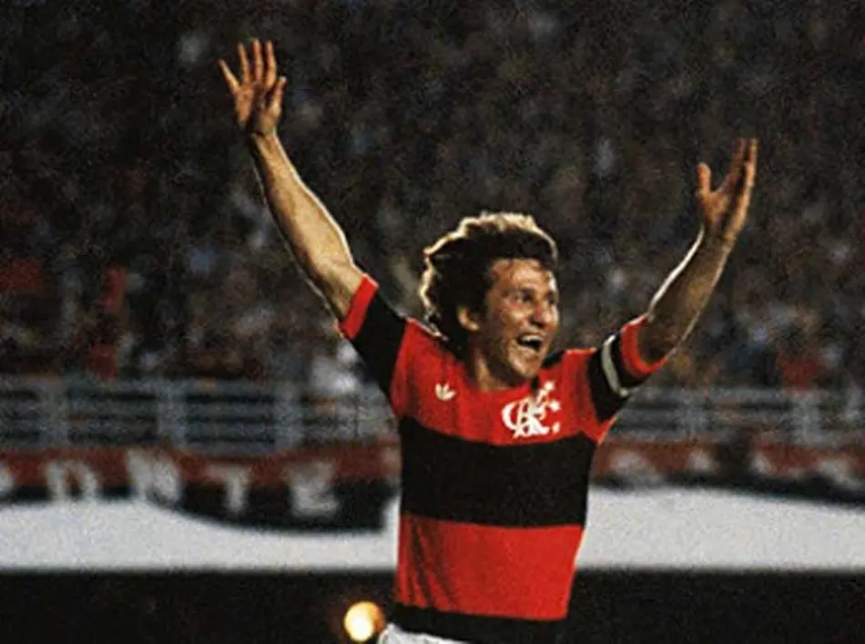
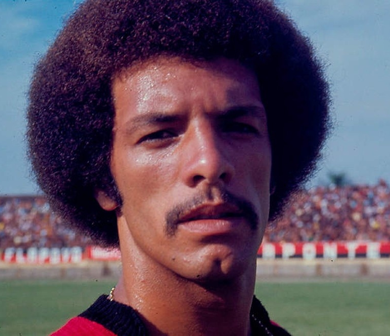
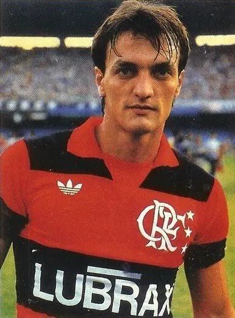
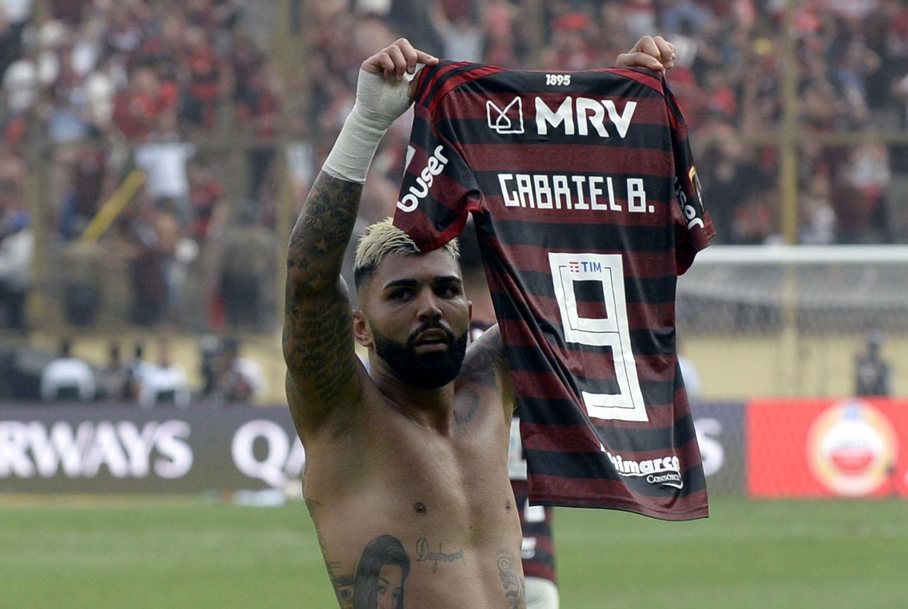
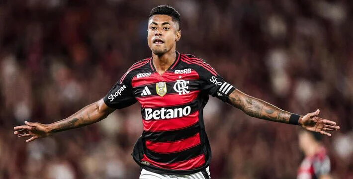
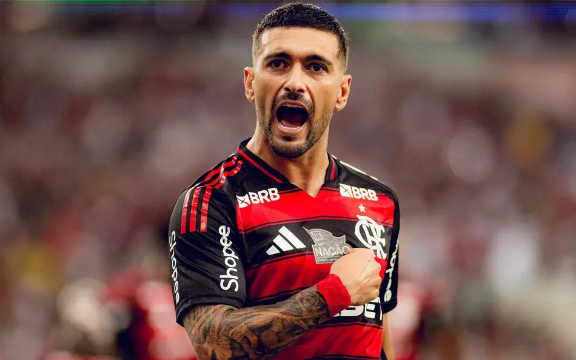

Lendas Rubro-Negras
O Flamengo sempre foi um celeiro de craques. Conheça alguns dos maiores ídolos que já vestiram o Manto Sagrado:

Arthur Antunes Coimbra (Zico)
O maior ídolo da história do Flamengo e o eterno dono da camisa 10, Zico foi o grande protagonista do time campeão do mundo na década de 80. Unindo uma técnica genial, visão de jogo incomparável e um amor incondicional ao clube, o Galinho de Quintino transformou o futebol em arte e guiou a Nação Rubro-Negra às suas maiores glórias.

Júnior
O 'Maestro' da lateral-esquerda rubro-negra, Júnior foi um dos grandes pilares das glórias mundiais do Flamengo na década de 80. Dono de uma inteligência tática e técnica invejáveis, ele unia a precisão dos passes à liderança nata, demonstrando sempre um amor incondicional ao clube em cada uma de suas centenas de atuações históricas.

Leandro
Considerado por muitos o maior lateral-direito da história do Flamengo e do futebol brasileiro, Leandro foi a personificação da elegância em campo. Peça fundamental no time campeão do mundo na década de 80, combinava uma técnica refinada com um amor incondicional ao clube, jogando toda a sua carreira exclusivamente com o Manto Sagrado.

Adriano Imperador
Revelado na Gávea, voltou ao clube em 2009 para liderar a equipe rumo ao hexacampeonato brasileiro, criando uma identificação única com a torcida devido às suas raízes e raça em campo.

Gabriel Barbosa (Gabigol)
Um dos grandes heróis da geração recente. Com seus gols decisivos, incluindo os dois na final da Libertadores de 2019 e o do título de 2022, cravou seu nome para sempre no panteão dos maiores do clube.

Bruno Henrique
Com sua velocidade e poder de decisão, o "Rei dos Clássicos" se tornou um dos jogadores mais vencedores e amados pela torcida desde sua chegada em 2019.

Giorgian De Arrascaeta
Considerado um dos maiores meias da história do Flamengo e um verdadeiro gênio com a bola nos pés, Arrascaeta é o grande maestro da geração mais vitoriosa do século. Peça fundamental nas históricas conquistas da Libertadores de 2019, 2022 e 2025, o uruguaio combina uma técnica invejável, visão de jogo mágica e amor incondicional ao clube, desfilando toda a sua classe para eternizar seu nome no coração da Nação Rubro-Negra.